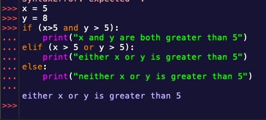
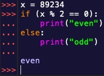

As useful as if statements are, we’ve so far only looked at a third of what they can do. If statements are most useful when using multiple conditions with elif and else.
Else allows for you do so something if the “if” is not true. Elif allows you to check multiple conditions. If the if condition and elif conditions are untrue, then the else code will execute.
We can use this to make more complex programs.
Using the ‘and’ and ‘or’ operators we can have more control over when a line of code executes!
This could include math as well!
Finally, we can also use if statements to make checks to have a program work.
Overall, if statements using elif and else are very useful. They can be used to control your program’s functionality. I would highly reccomend playing around with these on your own. You can make very cool programs even just using if statements!
{% include 'partials/article_navigation.html' %} {% endblock %}